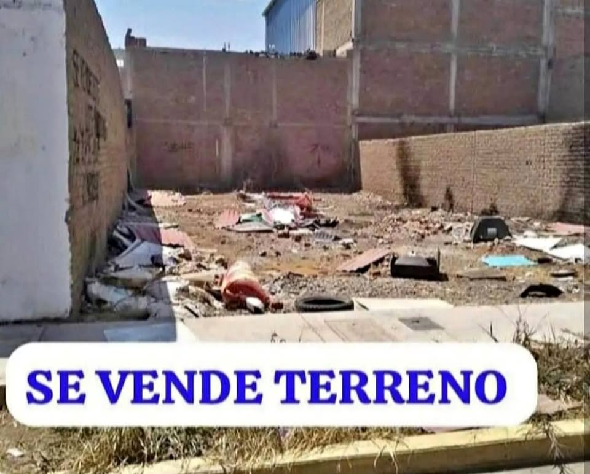

Precio desconocido 1.8 ha

URBANIZACIÓN NATASHA CERCA AL PODER JUDICIAL VENDO LOTE DE TERRENO ÁREA : 180.00 M2 DOCUMENTOS EN REGLA LIBRE DE CARGAS Y GRAVAMEN TITULO DE PROPIEDAD CEL. [hidden information]
Abrir en CompraTerrenos.pe →